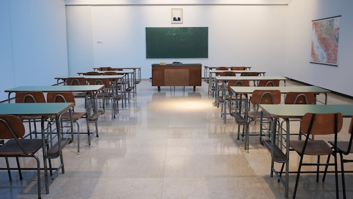

On This Page:
Breaking Down Language & Literacy Barriers: A Path Towards Equality
Language is the foundation of human connection — it shapes how we learn, how we access services, and how we participate in society. Yet for millions of people around the world, language and literacy barriers create invisible walls that lock them out of education, healthcare, employment, and equal opportunities. This is one of the most overlooked dimensions of inequality addressed by SDG 10.
Literacy is not simply the ability to read and write — it is the key to participation in modern society. When people cannot read a contract, understand a medical prescription, navigate a government website, or communicate in the dominant language of their country, they are systematically excluded from the opportunities that others take for granted.
SDG 10 — Reducing Inequalities — calls us to address these deep structural barriers. Language and literacy inequality is not just an individual failing; it is a social problem rooted in history, policy, and power. Recognising this is the first step toward change.
⚠️ Understanding the Scale of Language & Literacy Inequality
According to UNESCO, approximately 773 million adults worldwide lack basic literacy skills — the majority of whom are women. In many developing countries, minority language speakers and indigenous communities face the additional barrier of being educated or served in a language that is not their mother tongue, making learning and access even harder.
Language barriers do not only affect people in developing nations. Immigrants, refugees, and minority communities in wealthy countries also face profound exclusion. A person who speaks limited English in the United Kingdom, or limited French in Canada, may struggle to access legal services, understand their rights, or communicate with healthcare providers — regardless of how intelligent or capable they are.
Illiteracy and language barriers compound other forms of inequality — making it harder for affected individuals to escape poverty, access justice, or participate in democratic processes. They create a cycle that is difficult to break without deliberate, sustained intervention.
Key Facts About Literacy Inequality
- 773 million adults globally cannot read or write — two-thirds of them are women.
- Around 250 million children are failing to acquire basic literacy skills even after years of schooling.
- Minority language speakers are significantly more likely to drop out of school early.
- Immigrants with limited host-country language skills earn up to 40% less than fluent speakers.
How Language Barriers Widen the Education Gap
Education systems around the world often operate in a single dominant language — typically the language of the colonial power or the national majority. For children whose home language is different, school becomes a place of confusion and exclusion rather than learning and growth. Studies consistently show that children learn best in their mother tongue, especially in the early years of schooling.
When children are taught in a language they do not understand at home, they fall behind in foundational skills like reading comprehension and numeracy. Teachers who are not trained to support multilingual learners often lack the tools to bridge this gap. As a result, children from linguistic minority communities drop out at higher rates, have lower academic achievement, and face greater barriers to higher education and employment.
Literacy is also deeply tied to confidence. A child who struggles to read in a language that is not their own may begin to believe they are incapable of learning — carrying that damaging belief into adulthood. Addressing language barriers in education is not just about teaching vocabulary; it is about restoring dignity, confidence, and the right to learn.

💡 Solutions for Education
- Introduce mother-tongue-based multilingual education in early schooling years.
- Train teachers in multilingual and culturally responsive teaching methods.
- Develop and distribute learning materials in local and minority languages.
- Create adult literacy programmes that respect learners' existing language skills.
🩺 When Language Barriers Cost Lives: Inequality in Healthcare
Language barriers in healthcare are a matter of life and death. When a patient cannot communicate their symptoms clearly to a doctor, or when they cannot understand a diagnosis or medication instructions, the consequences can be fatal. Studies have shown that patients with limited proficiency in the dominant language receive lower quality care, experience more medical errors, and have worse health outcomes than fluent speakers.
Imagine being in pain and unable to explain where it hurts. Imagine receiving a cancer diagnosis in a language you barely understand, with no one to help you process what it means or what to do next. For millions of immigrants, refugees, and minority language speakers, this is not a hypothetical — it is a daily reality.
Low literacy also compounds healthcare inequality. Patients who cannot read written instructions, consent forms, or medication labels are at a significant disadvantage. Public health campaigns — about vaccines, disease prevention, mental health — often fail to reach the communities that need them most because the information is only available in the dominant language or at a reading level that excludes many adults.
Solutions for Healthcare
- Provide professional medical interpreters and translation services in hospitals and clinics.
- Develop multilingual health information materials and easy-read resources for low-literacy patients.
- Train healthcare workers in cultural competency and communication with language-diverse patients.
- Use visual aids, diagrams, and pictorial instructions alongside written medical guidance.
💡 Practical Solutions to Break Down Language & Literacy Barriers
Technology as a Bridge
Technology offers powerful tools to reduce language and literacy barriers. Translation apps, voice-to-text tools, and AI-powered language learning platforms have made it easier than ever for people to communicate across language differences. Governments and organisations can leverage these technologies to make public services, legal information, and healthcare guidance available in multiple languages at low cost.
Community-Based Literacy Programmes
Community literacy programmes that meet people where they are — in their own languages, at their own pace, in familiar environments — have proven highly effective. When literacy education is combined with practical life skills such as reading a bus timetable, filling in a job application, or understanding a rental agreement, it becomes immediately relevant and motivating for learners.
Policy and Legal Reform
Governments must recognise language rights as human rights. This means legally protecting the right to access public services in one's own language, funding multilingual education systems, and requiring healthcare and legal services to provide interpretation. Countries that have adopted robust language policies demonstrate that it is possible to value linguistic diversity while building a cohesive society.
Raising Awareness and Changing Attitudes
Social attitudes toward language diversity matter enormously. When speakers of minority languages are made to feel ashamed of their mother tongue, or when literacy struggles are treated as personal failures rather than systemic issues, the barriers only deepen. Education systems, media, and community leaders all have a role to play in fostering respect for linguistic diversity and creating environments where people feel safe asking for help.
⚡ What You Can Do — Starting Today
Language and literacy inequality can feel distant or abstract — until you look at the person sitting next to you. As students, citizens, and future professionals, we all have the power to take meaningful action.
Actions for Students & Citizens
- Volunteer as a literacy tutor or language conversation partner for immigrants and refugees in your community.
- Advocate for multilingual signage, information, and services in your school, workplace, or local area.
- Support organisations that provide free literacy education and language classes.
- Challenge language-based discrimination when you see it — defending someone's right to speak their language is an act of equality.
- As a future professional, commit to making your communications clear, accessible, and inclusive regardless of your field.
- Share information about language rights and literacy programmes on social media to raise awareness.
Reducing language and literacy inequality does not require extraordinary resources — it requires empathy, awareness, and the willingness to make small but meaningful changes in how we communicate, design services, and treat one another.
Conclusion: Language is a Right, Not a Privilege
Language and literacy are not just communication tools — they are the keys to participation in society. When people are excluded because of the language they speak or their inability to read, we lose their ideas, their contributions, and their potential. SDG 10 calls on us to build a world where no one is left behind because of the words they use or the letters they cannot read.
Progress is possible. From multilingual classrooms to medical interpreters, from community literacy programmes to language-rights legislation — the solutions exist. What is needed is the collective will to implement them.
📖 "A language is not just words. It is a culture, a tradition, a unity of a community — a whole history that creates what a community is. It is all embodied in language." — Noam Chomsky